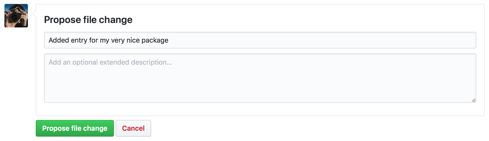
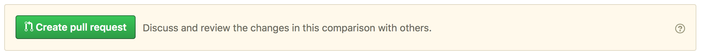
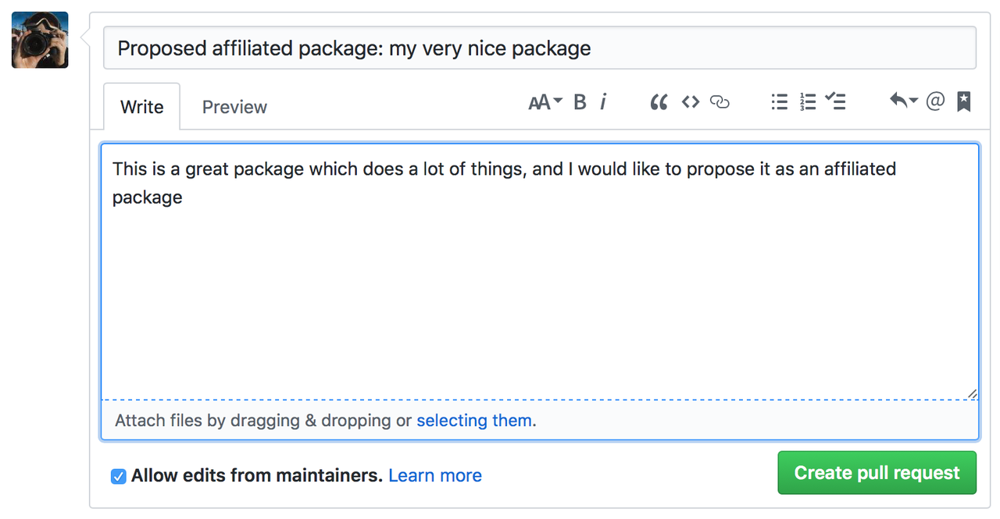

Review Process
This document describes the procedure for proposing, reviewing, and making a decision about PlanetaryPy-affiliated packages. This is meant as a record of the PlanetaryPy procedure and eventually we'll have more detailed instructions on proposing an affiliated package, like Astropy does.
Proposing an affiliated package
These instructions are for affiliated package authors
Once you believe your package is ready to be reviewed by the
PlanetaryPy Project, open a pull request to the src branch of the
planetarypy.github.io repository,
modifying the data/registry.json file to add details about your
own package. If you are not comfortable with git, you can do this
by using the 'Edit this File' button (that looks like a pencil which
is to the the upper right of the document, next to the trash can
icon) on the webpage for the registry.json
file. If you get a message saying You need to fork this repository
to propose changes then click on the green button to confirm the
forking:
Copy the following template entry and fill out the details:
{
"name": "Your package name",
"maintainer": "Your name <your email address>",
"home_url": "URL to the home page or documentation",
"repo_url": "URL to the repository",
"pypi_name": "PyPI name if it exists, set to an empty string otherwise",
"description": "A few sentence description of your package.",
"review": {
"functionality": "To be filled out by the reviewer",
"ecointegration": "To be filled out by the reviewer",
"documentation": "To be filled out by the reviewer",
"testing": "To be filled out by the reviewer",
"devstatus": "To be filled out by the reviewer",
"pythonver": "To be filled out by the reviewer",
"last-updated": "To be filled out by the reviewer"
}
},
then add it near the top of the registry.json file,
after:
{
"packages": [
Once this is done, under Propose file change you can enter a short description for the commit then click on the green Propose file change button:
On the next screen, check the changes you made, and click on the green Create pull request button:
Finally, give a title to the pull request such as Proposed affiliated package: your package name and include a short description of the package, then click on Create pull request:
Once you've done this, you're all set! The next steps are the review, for which the results will be posted on the pull request.
Reviewing affiliated packages
These instructions are for coordinators and reviewers
One of the PlanetaryPy Technical Committee (TC) members will be in charge of the review process (not necessarily the same person for each package). This TC member (hereafter the coordinator) will find someone to carry out the main review of the package (hereafter the reviewer). In this sense the role of the coordinator is similar to that of a journal editor. However this is only partially true, because the coordinator (speaking for the TC as a whole) may add their views to the review, unlike a journal editor who is often strictly impartial on the review itself. The pool of available reviewers will be anyone who has an official role on the PlanetaryPy team.
The coordinator sends out an email to possible reviewers one at a time to find someone who is willing to review the package, using the template at the bottom of this document. Let them know at this point that the coordinator will also be doing a review and synthesizing the results into a single review. Once a reviewer accepts, the coordinator sends them an email with detailed review instructions, using the template at the bottom of this document. The coordinator then leaves a message on the pull request saying:
Thank you for proposing this package as an affiliated package! I'm happy to confirm that your package is now under review and we'll post the results of the review here.
Once the reviewer has finished, they send their review back by email to the coordinator, who then does their own review and then writes up a review using the review template which includes a table with badges (template at the bottom of this document). They then share it with the other TC members to check for consensus. The review including the final decision (accept or reject) is then posted on the original pull request. If the package is rejected, the original author has a month to respond to any of the points in the review, and the coordinator may decide to change the decision.
If the package is accepted, the coordinator edits the pull request
to add the results of the review to the registry.json file.
The pull request is then merged.
If the package is rejected, the decision is posted to the pull request, and the pull request is closed.
Templates
The following templates are to help the review coordinator communicate with the reviewer and the applicant.
Template email with review request
Subject: Reviewing a PlanetaryPy-affiliated package submission
Dear/Hi {potential reviewer},
The PlanetaryPy project has received a request to consider the following as an affiliated package:
Name:
Description:
Repository:
Documentation:
I am reaching out to ask whether you would be willing to review this package.
To provide some background, an affiliated package is a planetary-related Python package that is not part of the planetarypy core package, but is part of the PlanetaryPy Project community. Such a package should demonstrate a commitment to PlanetaryPy’s goals of improving reuse, interoperability, and interface standards for Python planetary packages.
Reviewing a package involves reading over the documentation, having a look at the code to assess it (e.g. for readability but not read it line by line), checking how well the package is tested, as well as assessing its integration with the PlanetaryPy Community and wider planetary software ecosystem. Most packages can be reviewed within an hour and reviews are anonymous by default. If you accept this review, we will send you a detailed list of criteria to check for the package as well as how to submit your review.
Could you reply to this email to let us know if you would be willing to review this package?
Thanks!
{coordinator_name}
Template email with review instructions
Dear/Hi {reviewer name},
Thank you for accepting to review the following package for the PlanetaryPy project:
Name:
Description:
Repository:
You can find our review guidelines and instructions at the following address:
https://planetarypy.github.io/packages/review-guidelines
Thanks!
{coordinator name}
Template review markdown
When you are ready to post the review on the application PR, you can just copy this whole block of text to the GitHub comment text box and then get to work modifying it. You'll need to remove the badges that don't apply and also add text where appropriate in the table. There are phrases in the text below that are surrounded by asterisks, those are meant as comments and should be removed, and only the text that applies should remain, altered to your liking.
This package has been reviewed for inclusion in the PlanetaryPy affiliated package ecosystem by a member of the PlanetaryPy community as well as myself, and I have synthesized the results of the review here. You can find out more about our review criteria in our [Review Guidelines](https://planetarypy.github.io/packages/review-guidelines). For each of the review categories below we have listed the score and have included some comments when the score is not green. *Remove the badges that aren't needed:* <table> <tr><td><b>Functionality/Scope</b></td><td> <a href="https://planetarypy.github.io/packages/review-guidelines/#functionality"> <img src="https://img.shields.io/badge/General%20Package-brightgreen.alt" alt=General Package"> <img src="https://img.shields.io/badge/Specialized%20Package-brightgreen.alt" alt=Specialized Package"> <img src="https://img.shields.io/badge/Out%20Of%20Scope-red.alt" alt=Out Of Scope"> </a></td></tr> <tr><td colspan=2><i>No further comments</i></td></tr> <tr><td><b>Integration with PlanetaryPy ecosystem</b></td><td> <a href="https://planetarypy.github.io/packages/review-guidelines/#ecointegration"> <img src="https://img.shields.io/badge/Good-brightgreen.alt" alt=Good"> <img src="https://img.shields.io/badge/Partial-orange.alt" alt=Partial"> <img src="https://img.shields.io/badge/None-red.alt" alt=None"> </a></td></tr> <tr><td colspan=2><i>No further comments</i></td></tr> <tr><td><b>Documentation</b></td><td> <a href="https://planetarypy.github.io/packages/review-guidelines/#documentation"> <img src="https://img.shields.io/badge/Good-brightgreen.alt" alt=Good"> <img src="https://img.shields.io/badge/Partial-orange.alt" alt=Partial"> <img src="https://img.shields.io/badge/Insufficient-red.alt" alt=Insufficient"> </a></td></tr> <tr><td colspan=2><i>No further comments</i></td></tr> <tr><td><b>Testing</b></td><td> <a href="https://planetarypy.github.io/packages/review-guidelines/#testing"> <img src="https://img.shields.io/badge/Good-brightgreen.alt" alt=Good"> <img src="https://img.shields.io/badge/Partial-orange.alt" alt=Partial"> <img src="https://img.shields.io/badge/Insufficient-red.alt" alt=Insufficient"> </a></td></tr> <tr><td colspan=2><i>No further comments</i></td></tr> <tr><td><b>Development status</b></td><td> <a href="https://planetarypy.github.io/packages/review-guidelines/#devstatus"> <img src="https://img.shields.io/badge/Good-brightgreen.alt" alt=Good"> <img src="https://img.shields.io/badge/Heavy%20Development-orange.alt" alt=Heavy Development"> <img src="https://img.shields.io/badge/Functional%20But%20Low%20Activity-orange.alt" alt=Functional But Low Activity"> <img src="https://img.shields.io/badge/Functional%20But%20Unmaintained-orange.alt" alt=Functional But Unmaintained"> <img src="https://img.shields.io/badge/Nonfunctional-red.alt" alt=Nonfunctional"> </a></td></tr> <tr><td colspan=2><i>No further comments</i></td></tr> <tr><td><b>Python version compatibility</b></td><td> <a href="https://planetarypy.github.com/packages/review-guidelines#pythonver"> <img src="https://img.shields.io/badge/Incompatible-red.alt" alt=Incompatible"> <img src="https://img.shields.io/badge/3.6-brightgreen.alt" alt=3.6"> </a></td></tr> <tr><td colspan=2><i>No further comments</i></td></tr> </table> *Include any other comments here* *If accepted and there are no governance documents or only partial governance documents:* Please remember that if your package doesn't explicitly have a set of governance documents, that's fine! The PlanetaryPy Project's governance models (consensus seeking, code of conduct, etc.) automatically apply to your project. If you want something different, be sure to include it in your package. *If accepted with all green:* **Summary/Decision**: Everything looks great, and we're happy to confirm that this package is accepted as an affiliated package! :trophy: *If accepted with some orange:* **Summary/Decision**: This package meets the review criteria for affiliated packages, so we are happy to confirm that we'll be listing your package as an affiliated package! Keep up the good work, and we encourage you to improve on the areas above that weren't "green" yet. *If there is any red:* **Summary/Decision**: Thanks for your work on this package! At the moment, we found some issues in some of the review areas. As per the review guidelines, we therefore won't be able to accept this package as an affiliated package yet. We will leave this pull request open for a month in case you would like to respond to the comments and/or address any of them. *In all cases:* If you have any follow-up questions or disagree with any of the comments above, leave a comment and we can discuss it here. At any point in future you can request a re-review of the package if you believe any of the scores should be updated - contact the coordination committee, and we’ll do a new review.